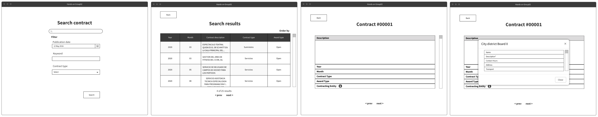

Group02 Application Requirements
Objectives
The goal of this app is to work as a search engine where companies and particulars can check information about public procurement in the city of Madrid, Spain:
- Search for specific contracts, applying several search filters, change the order of the results...
- In contracts in which the contracting body is a District Board (Junta), the user will be able to consult all the contact information of that board: address, hours, telephone, mail...
Application description
The app will be divided in 3 windows:
- 1. Main: in this window, users can search contracts and apply several search filters such as publication date, location, contracting entity, current state, keywords...
- 2. Search results: in this window, users can check the results of their consult and order them by different parameters: latest first, oldest first, alphabetical order...
- 3. Contract profile: in this window, users can check the information related to one spicific contract and if the contracting entity corresponds to a City District Board, contact data about the entity will be also available.
Application Mockup
